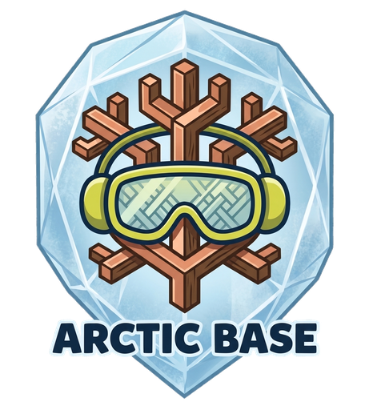

A self-hosted workbench host for AI agents. Decisions, file handoff, document review, and async signaling — out of band from chat, with a real audit trail.
Arctic Base is the layer that sits between you and your AI coding agent for everything that doesn't fit in chat. The agent uses an HTTP API to publish approval forms, drop files, share images, render markdown, and ask questions; you respond in a browser at your pace. Each project gets its own themed workbench — visually distinct, persistent, auditable.
Single FastAPI process. Static SPA mounted at the root. State lives in flat files behind a Storage protocol. The agent's surface and the user's surface share the same origin — no CORS, no auth ceremony.
Approval / Q&A / pitch templates. Reference --wb-* CSS vars, fall back to localStorage + JSON export. Open standalone or via the workbench.
?since_version=N — agent polls 2–5 s while waiting; submit() bumps the version and wakes the loop. Long-poll / SSE upgradeable, no contract churn.
Theme tokens drive colors, typography, spacing — and a 7-axis layout block for density, corners, shadows, motifs, banner shape. Same template, five visibly different feels.
UI editor sends If-Match; if the agent rewrote the file underneath, you get a 412 with a "reload / overwrite / merge" prompt. Agent writes always succeed.
Every API call lands in an in-memory ring buffer; surfaced as a CRT terminal at the top of the management page. Polls every 5 s. Status colored by code.
Add arbitrary key: value pairs to a workbench: deploy_cmd, ci_url, secrets_path. Visible to agents on the manifest, rendered on the dashboard.
Persistent JSON task list. Steps with status (todo/in-progress/done/blocked), per-step blockers, and timestamps. Agent reads + writes via GET/PUT .../content; user ticks checkboxes in the browser. Survives across sessions.
Pin objects to the top of their drawer; archive to hide without losing them. Toggle "Show archived" on the workbench dashboard. Edit-mode reveals reorder + delete + pin + archive controls.
Paste a clipboard image or drag a file into the MD or HTML editor — it uploads as a real kind: image object and inserts the link at the cursor. No "save → find → drag" friction.
Labelled tar.gz checkpoints — proactive backup before risky agent runs. List, download, restore-into-new-workbench, delete. Different from trash (reactive); this is "save before letting the agent run wild."
Chronological NDJSON of every content-level mutation: object create / update / delete / content-write, theme writes, response appends, workbench updates. Per-workbench download. Replay history without spelunking the filesystem.
One-click zip of a workbench: rendered MD, themed approval HTML, images, files, theme CSS, index page. No Arctic Base required to view — host on any static server. Good for archival.
POST /api/agent/self-test — synthetic round-trip in milliseconds. Confirms the loop works (workbench create → object → content → response → read → cleanup) before the agent commits to a real task. Catches deploy bugs early.
Hand the agent one URL — /agent — and the chain of auto-discovery does the rest.
/openapi.json
window.workbench contract, polling cadence, theme tokens, review-HTML rules, template-first authoring discipline.{project_title}
{{TITLE}} / {{STATE_KEY}} pre-filled. Agent edits the marked QS array.meta JSON + file body. Object lands in the "approvals" drawer of the workbench dashboard.state_version bumps from 0 to 1.Each workbench has a theme.md with structured tokens (colors / typography / spacing) and a layout block that controls composition: density, corner style, shadow style, card decoration, banner shape. Same Svelte template, visibly different output.
Just the ones agents care about. Full machine-readable spec at /openapi.json.
?fill_title=....If-Match for editor stale-check.